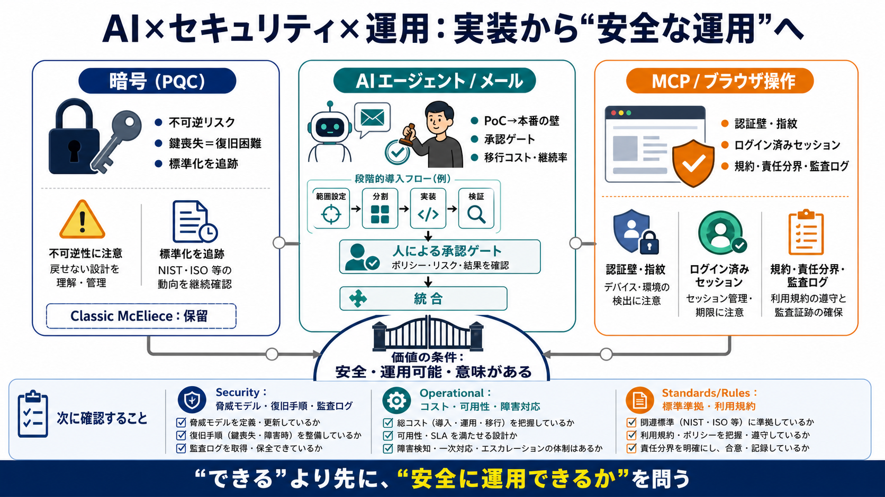

[PDF] Status Report on the Fourth Round of the NIST Post-Quantum ...
15 NIST IR 8545 March 2025 Fourth Round Status Report Additionally, during the third round, Classic McEliece was propose…

「できる」だけでなく、「安全に運用できるか」「価値として成立するか」を問う流れが同時多発している。
対象は①ポスト量子暗号の“不可逆リスク” ②AIエージェントの人間承認プロセス ③AIブラウザ操作の安全性・再現性（MCP）。
暗号や自動化は、技術的強度より「失敗時に取り返せない設計」が本質課題になる。
AIの作業は速く進められても、重要変更点だけは人間の“承認ゲート”で止める。
トレンドは別領域に見えて、共通して「運用・責任・復旧」を中心に移っている。
AI Webメールは“動く”だけでは勝ちにくく、移行の負担と運用のスケールが本体になる。
署名・暗号化URLは、鍵（またはパスワード）を失うと復元できない設計が多い。
※本件は要約中心のため、救済策の有無・具体策は原文で要確認。
安全性は共通語だが、暗号・AI・ブラウザ操作では失敗の形と責任範囲が異なる。
Classic McElieceはNIST第4ラウンドで有力候補だったが、最終的にHQCのみ標準化で保留になった。
結論：技術の良さだけでなく「規格の状態」を追跡する必要がある。
NeoBrowser（MCP）は、ヘッドレス指紋や認証壁を避けるため「ログイン済みセッション」を操作する設計を狙う。
※要約だけでは適法性・安全対策の根拠が不明。
この要約では詳細が欠けるため、次に確認すべきチェック項目を先に固める。
技術導入の次段階は「安全」「運用可能」「価値として成立」の同時達成になる。
要約のまま判断せず、セキュリティ設計・評価指標・運用コスト・規約対応まで原文で確認する。
すべては「安全に、運用可能で、意味のある価値として成立するか」から逆算する。
15 NIST IR 8545 March 2025 Fourth Round Status Report Additionally, during the third round, Classic McEliece was propose…
and, as discussed later, can perform better only in very constrained network conditions). Classic McEliece, though widel…
Adoption of the newly-standardized post-quantum signatures ML-DSA and SLH-DSA will take longer as stakeholders work to r…
These standards provide the technical blueprints for implementing "quantum-safe" or "post-quantum" algorithms. By standa…
In summary, as of May 2025, some country PQC requirements endorse FrodoKEM and Classical McEliece whereas most endorse a…